codly.ref
Sets shared formatting for references to code lines, highlights, and annotations.
Signature
codly.ref(body, by: "line", sep: "-", numbering: numbering.with("1"))
codly.ref-set_(..fields)codly.ref is an element definition; codly.ref-set_(...) is a set-rule wrapper for its fields, not a separate element. There is no ref-show_: references render through native syntax and the show rules of the generated reference elements.
Fields
| Field | Type | Default / required | Meaning |
|---|---|---|---|
body |
none | content |
Required, positional | The reference content. |
by |
none | "line" | "item" |
"line" |
Reference mode: "line" displays the line number; "item" displays the highlight tag or annotation content. |
sep |
none | str | content |
"-" |
Separator between the containing block reference and the referenced line or item. |
numbering |
none | function |
numbering.with("1") |
Line-number formatter used when by is "line"; none hides the line-number part. |
Behavior
The fields in codly.ref are shared defaults for codly.line-ref, codly.highlight-ref, and codly.annotation-ref. A field set directly on one of those generated reference elements takes precedence over the shared setting. by: "item" uses the highlight’s tag or the annotation’s content; line references always refer to a displayed line. Numbering callbacks receive the displayed line number. These references resolve to the containing code figure or block, so ordinary Typst reference formatting still applies to that target.
See codly.line-ref, codly.highlight-ref, and codly.annotation-ref for the generated reference fields.
Example
This figure labels a code block and an annotation. The reference to the annotation uses its content as the item suffix:
#import "@preview/codly:2.0.0" as codly
#show: codly.ref-set_(by: "item", sep: " — ")
#figure(caption: [A code example])[
#codly.new(
```
first line
second line
```,
annotations: ((start: 2, label: <note>, content: [the note]),),
)
]<example>
The annotation reference is @note and the line is @example:2.Edit & run on your device
The highlighted source and output update after you stop typing. Copy code includes your edits.
